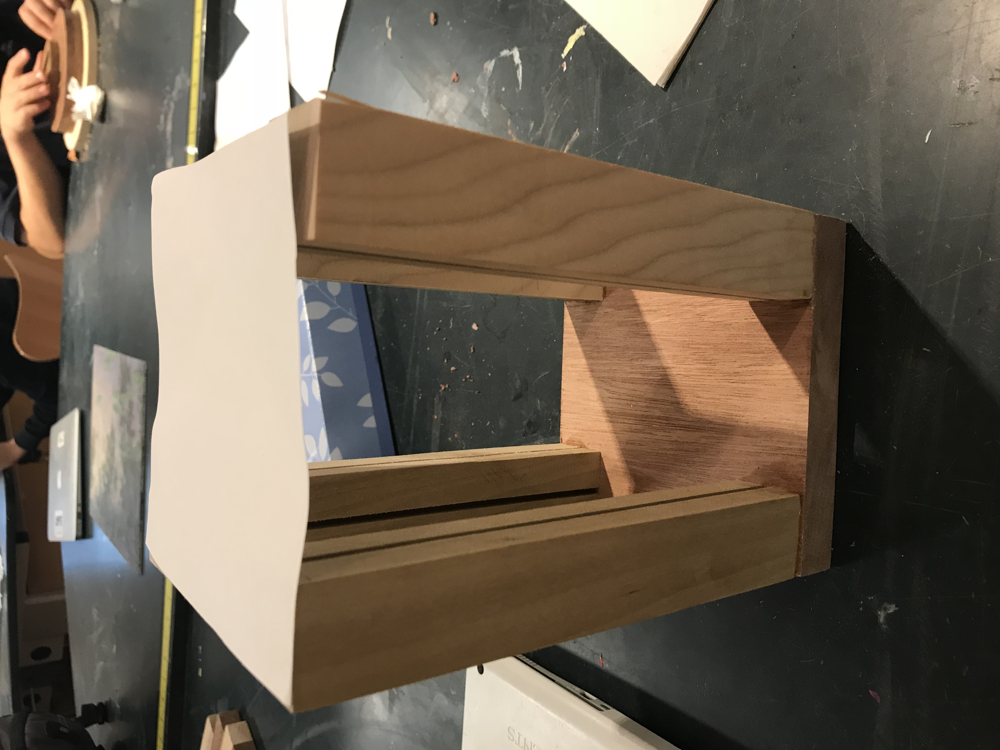
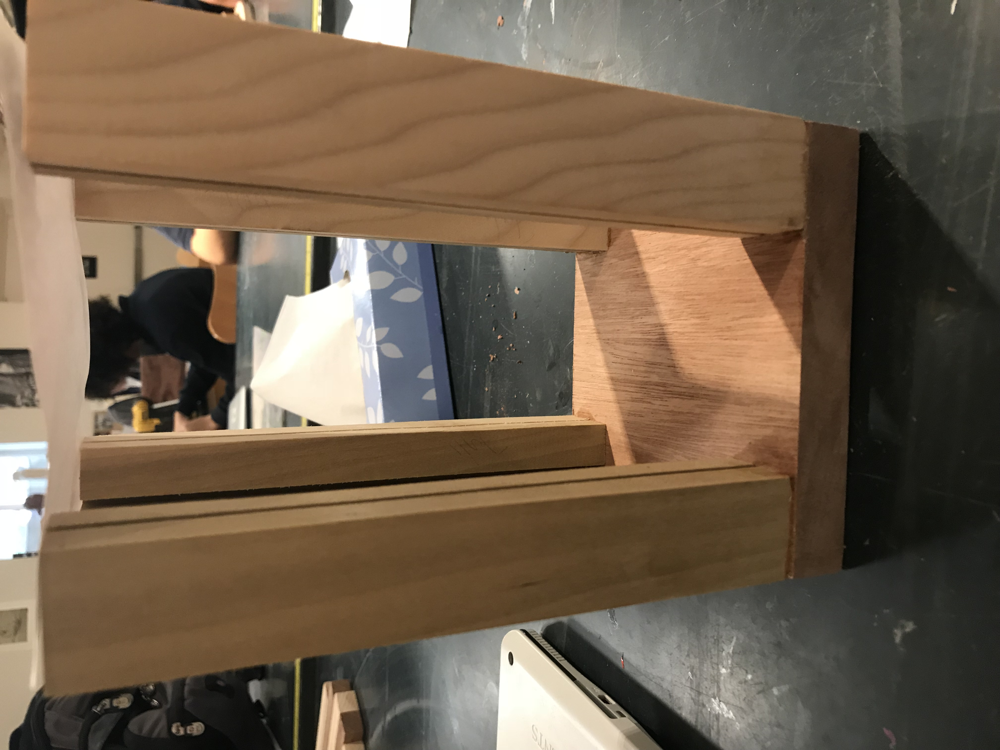
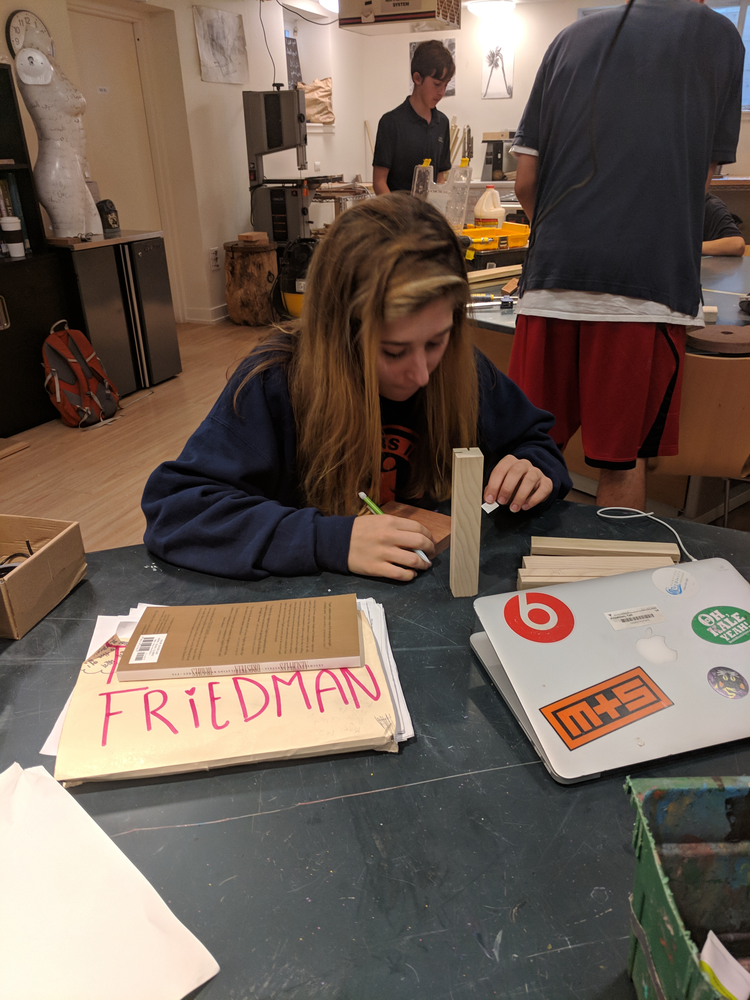
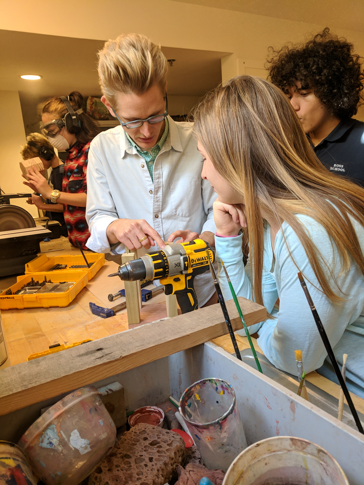
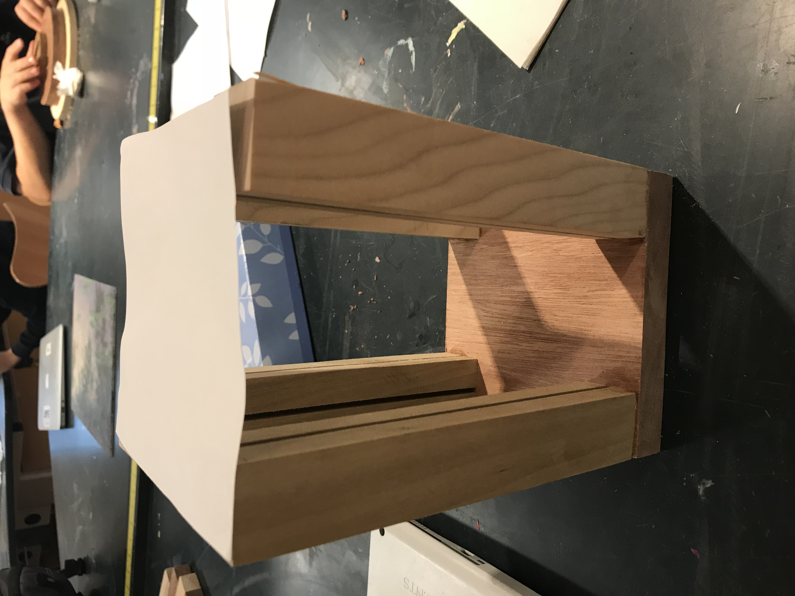
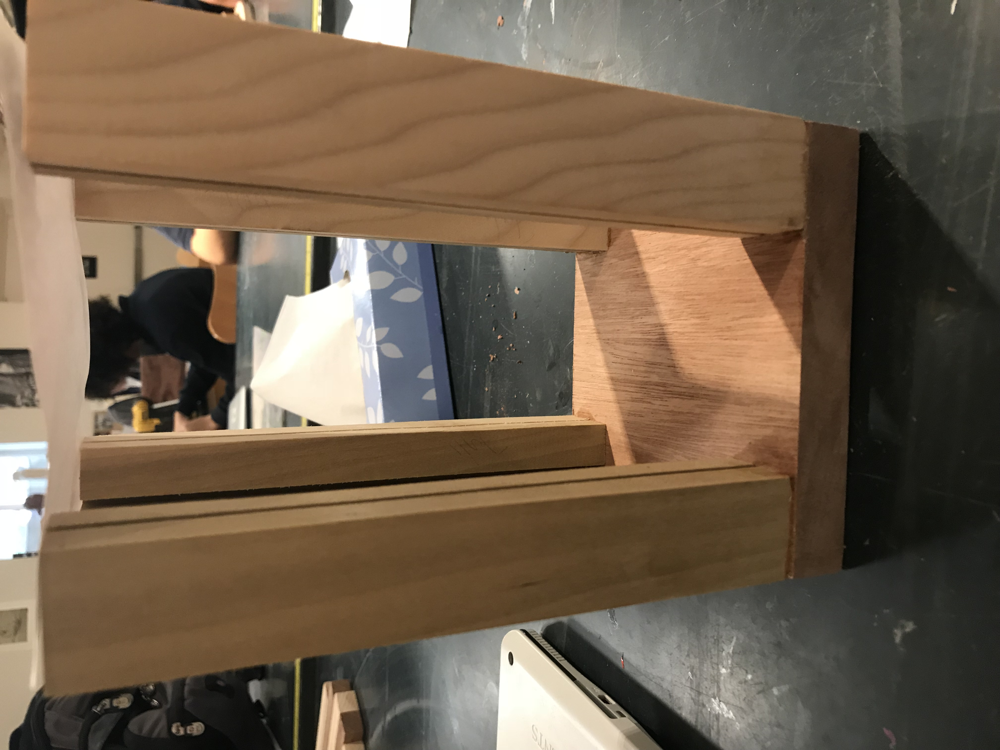
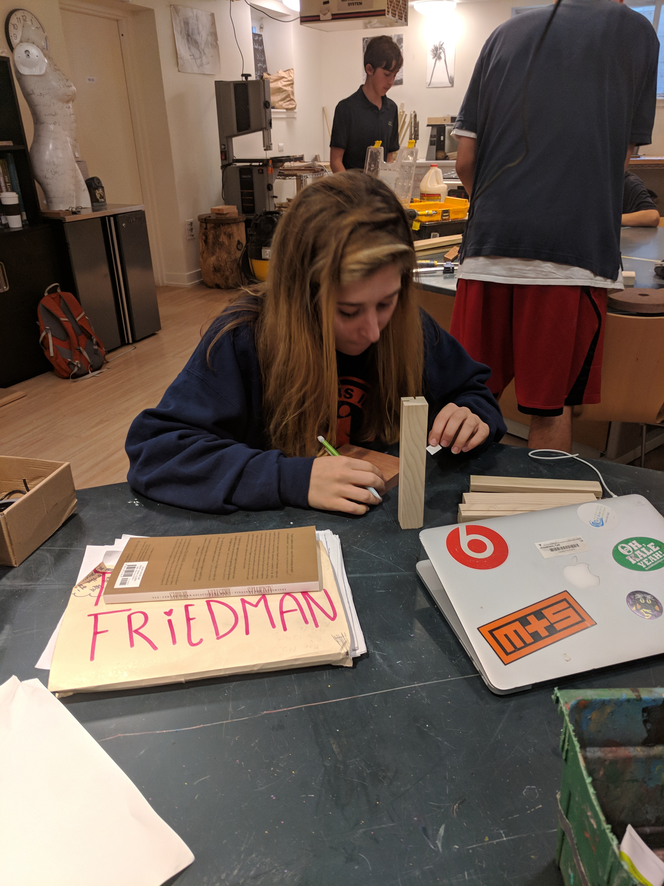
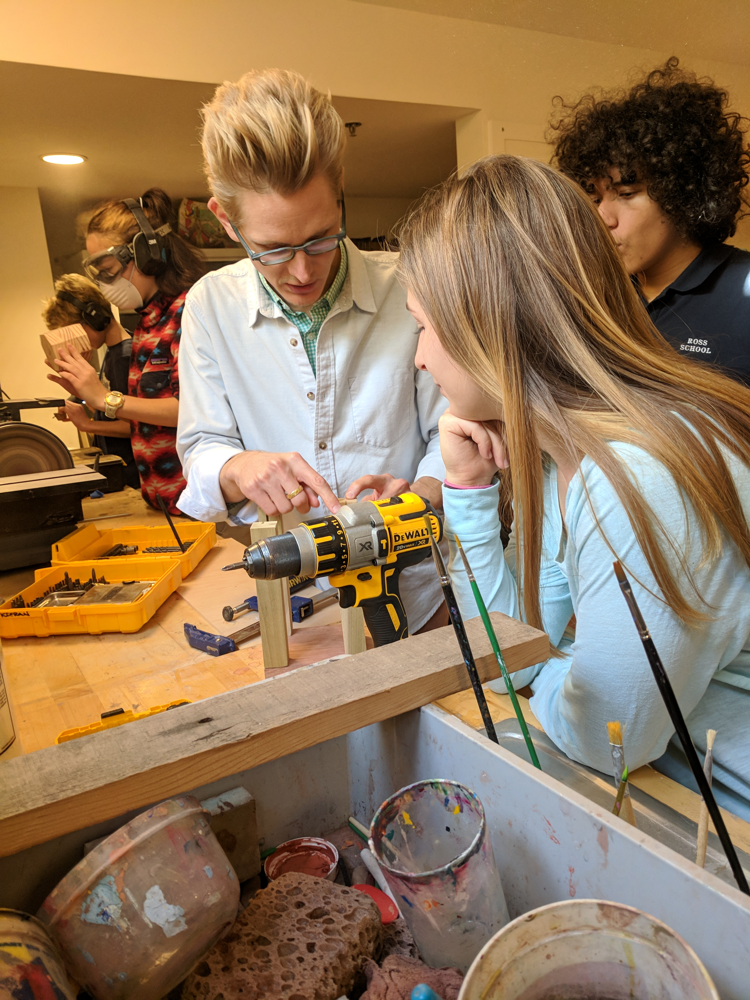

Senior Project
Posted on Wednesday 11:30pm
For my senior project,The brain is such a vital organ - solely responsible for sending the electrical impulses to the entirety of our bodies that allow our heart to beat without us having to put thought into the action, to allow us to form memories, and even to experience consciousness and interact meaningfully with our world - and yet so few know exactly how this amazing component of our bodies has evolved over time to become the powerhouse that it is today. For my senior project, I wish to change that! I am curating a museum-esque set-up of the history of the human brain, along with its current anatomy and the function of each individual lobe. I will also be showcasing a detailed display of five neurological impairments, with 3D printed models of brains to illustrate these neurological diseases and the typical deficits in which they present . As a part of the display, I will also show how these neurological conditions affect the rest of the human body. Information regarding how these neurological diseases can be prevented - if at all possible - as well as the biological reasoning as to how they are caused will also be provided. In this day of age of tech addition, an interesting addition to this display will be a section describing the science of how today's technology is affecting the human brain. Along with the various displays, I also wish to raise both awareness, and money to help fund research towards brain cancer. As my dance teacher’s husband is currently battling this dreadful condition, I wish to be a part of funding the research that is so pivotal to finding a cure.
Disabilities Project
Posted on Wednesday 11:30pm
For my disabilities project, I chose to create an app to help people that have Multiple Sclorosis. I chose this because I know someone that has MS. The app I created gives differnet excersize and meal recommendations as well as ways to communicate with other people who have this illness.
Desk Lamp Project
Posted on Wednesday 11:30pm
 







For my lamp project, I decided to design it in a very simplistic way. I wanted to create a smaller more basic lamp. I was inspired by a lamp that I saw that was made of all rocks and I wanted to create something similar. I decided to create a lamp that is made of wood, plexiglass, beachglass and metal. This lamp is unique because I dont think I have ever seen one like it. Throughout this project I was became more comfortable using the different saws, drills and sanders. I have used most of these before but didnt have much practice and wasnt very comfortable with them. Now I feel way more comfortable using these tools. I learned how to work with medal and weld. One challege that I encountered is that the one period is not enough time to work on a project like this because once you get started and have to take turns using the different machines you have to clean up and get ready for your next class so that you arent late. Another challege that I faced was was getting the legs of my lamp screwed together and the legs even. FOr some reason after measuring and cutting the legs they ended up being uneven so i had to go back and sand then down to make them even. Another challege I faced was screwing the legs to the base of my lamp. This was difficult because it was difficult to make sure the legs were screwed in correctly and evenly so I had to redo this a couple times.
Disability Project
1) Briefly describe the Virry Safari experience including what you saw and your reaction to the experience. Did you feel like you were really there? The Virry Safari experience 2) Describe your experience painting in VR. How was it different from drawing or painting in the physical world? What are some advantages and disadvantages to creating in VR? How long did it take you to get use to the controls? My experience 3) What video did you watch on the Gear VR? What was the experience like? 4) How are 360° photos and videos different from traditional digital media? What are the advantages and disadvantages to using a 360° camera? What is an experience you would want to capture in 360°? 5) What are the differences between Google Cardboard, Gear VR, and Oculus Rift? How does the ability to use your hands improve the experience? 6) WHat types of problems can be solved with VR? What industries can greatly benefit from VR (e.g, education, entertainment, health, sports, ect.)?